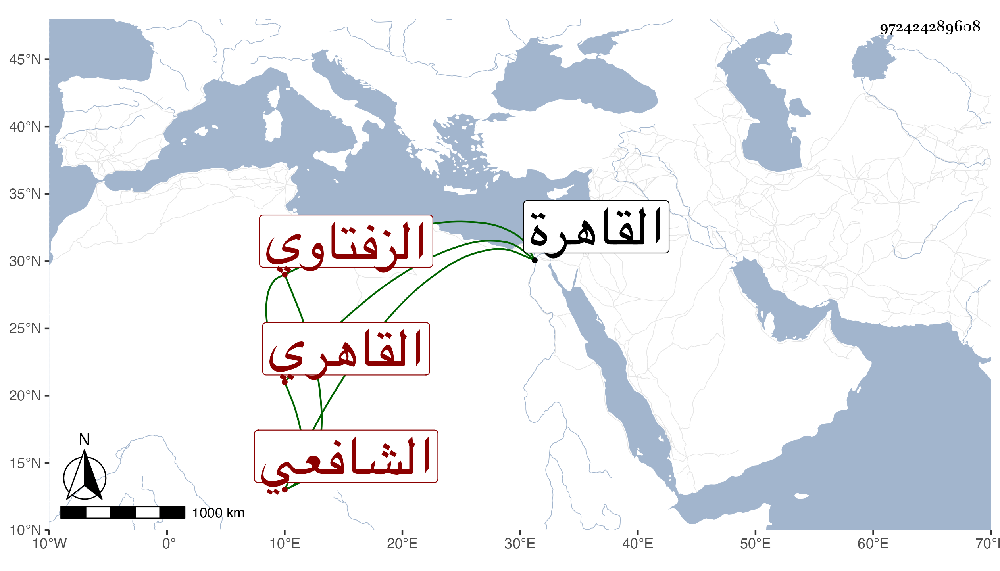

0902Sakhawi.DawLamic.ITO20230111-ara1.EIS1600.972424289608
Biography ID: 972424289608
564
محمد بن محمد بن محمد بن عبد الله بن أحمد ولي الدين أب والفضل بن ناصر الدين أبي اليمن بن الشمس الزفتاوي الأصل القاهري الشافعي الماضي أبوه وعمه عبد اللطيف وأبوهما وأخوه الصدر أحمد والآتي ابنه جلال الدين محمد . حفظ القرآن والعمدة والمنهاج ، وعرض على شيخنا وابن المحمرة وقارئ الهداية في آخرين منهم العلم البلقيني وناب عنه في القضاء وكذا عمن بعده وكذا ناب في الحسبة بالقاهرة وقد أجاز له ولأخته زينب باستدعاء بخط أخيهما الصدر بن الطحان وابن بردس وابن ناظر الصاحبة . ومضى له ولأبيه محمد ذكر في أخيه وكان عاريا. مات في ليلة الخميس ثامن عشرى ذي القعدة سنة أربع وثمانين وصلي عليه من الغد سامحه الله .
